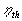

MODULE 10: HEAT ENGINES, REFRIGERATORS
AND HEAT PUMPS
(fragments of the CD that
comes with Cengel&Boles's book "Thermodynamics", 3-d edition,
McGraw-Hill, 1998)
Class notes (start)
The Second Law of Thermodynamics
The second law of thermodynamics states
that processes occur in a certain direction, not in just any direction. Physical
processes in nature can proceed toward equilibrium spontaneously:
Water flows down a water fall.
Gases expand from a high pressure to a
low pressure.
Heat flows from a high temperature to a
low temperature.
Once it has taken place, a spontaneous process
can be reversed; but, it will not reverse itself spontaneously. Some external
inputs, energy, must be expended to reverse the process. As it falls down the
water fall, water can be collected in a water wheel, cause a shaft to rotate,
coil a rope onto the shaft, and lift a weight. So the energy of the falling
water is captured as potential energy increase in the weight, and the first
law of thermodynamics is satisfied. However, there are losses associated with
this process (friction). Allowing the weight to fall, causing the shaft to rotate
in the opposite direction will not pump all of the water back up the water fall.
Spontaneous processes can proceed only in a particular direction. The first
law of thermodynamics gives no information about direction; it states only that
when one form of energy is converted into another, identical quantities of energy
are involved regardless of the feasibility of the process. We know by experience
that heat flows spontaneously from a high temperature to a low temperature.
But, heat flowing from a low temperature to a higher temperature with no expenditure
of energy to cause the process to take place would not violate the first law.
The first law is concerned with the conversion
of energy from one form to another. Joule's experiments showed that energy in
the form of heat could not be completely converted into work; however, work
energy can be completely converted into heat energy. Evidently heat and work
are not completely interchangeable forms of energy. Furthermore, when energy
is transferred from one form to another, there is often a degradation of the
supplied energy into a less "useful" form. We shall see that it is the second
law of thermodynamics that controls the direction processes may take and how
much heat is converted into work. A process will not occur unless it satisfies
both the first and second laws of thermodynamics.
Some
Definitions
To express the second law in a workable
form, we need the following definitions.
Heat (Thermal) Reservoir
A heat reservoir is a sufficiently large
system in stable equilibrium to which and from which finite amounts of heat
can be transferred without any change in its temperature.
A high temperature heat reservoir from which
heat is transferred is sometimes called a heat source. A low temperature heat
reservoir to which heat is transferred is sometimes called a heat sink.
Work Reservoir
A work reservoir is a sufficiently large
system in stable equilibrium to which and from which finite amounts of work
can be transferred adiabaticlly without any change in its pressure.
Thermodynamic Cycle
A system has completed a thermodynamic cycle
when the system undergoes a series of processes and then returns to its original
state, so that the properties of the system at the end of the cycle are the
same as at its beginning.
Thus, for whole numbers of cycles
Heat Engine
A heat engine is a thermodynamic system operating in a thermodynamic cycle to which net heat is transferred and from which net work is delivered.
The system, or working fluid, undergoes a series of processes that constitute the heat engine cycle.
The following figure illustrates a steam power plant as a heat engine operating in a thermodynamic cycle.
Thermal Efficiency, 
The thermal efficiency is the index of performance of a work-producing device or a heat engine and is defined by the ratio of the net work output (the desired result) to the heat input (the costs to obtain the desired result).
For a heat engine the desired result is the net work done and the input is the heat supplied to make the cycle operate. The thermal efficiency is always less than 1 or or less than 100%
where
Here the use of the in and out subscripts means to use the magnitude (take the positive value) of either the work or heat transfer and let the minus sign in the net expression take care of the direction.
Now apply the first law to the cyclic heat engine.
The cycle thermal efficiency may be written as
Cyclic devices such as heat engines, refrigerators, and heat pumps often operate between a high-temperature reservoir at temperature TH and a low-temperature reservoir at temperature TL.
The thermal efficiency of the above device becomes
Heat Pump
A heat pump is a thermodynamic system operating in a thermodynamic cycle which removes heat from a low temperature body and delivers heat to a high temperature body. To accomplish this energy transfer, the heat pump receives external energy in the form of work or heat from the surroundings.
While the name "heat pump" is the thermodynamic term used to describe a cyclic device that allows the transfer of heat energy from a low temperature to a higher temperature, we use the terms "refrigerator" and "heat pump" to apply to particular devices. Here a refrigerator is a device that operates on a thermodynamic cycle and extracts heat from low-temperature media. The heat pump also operates on a thermodynamic cycle but rejects heat to the high-temperature media.
The following figure illustrates a refrigerator as a heat pump operating in a thermodynamic cycle.
Coefficient of Performance, COP
The index of performance of a refrigerator or heat pump is expressed in terms of the coefficient of performance, COP, the ratio of desired result to input. This measure of performance may be larger than 1 and we want the COP to be as large as possible.
For the heat pump acting like a refrigerator or an air conditioner, the primary function of the device is the transfer of heat from the low temperature system.
For the refrigerator the desired result is the heat supplied at the low temperature and the input is the net work into the device to make the cycle operate.
Now apply the first law to the cyclic refrigerator.
And the coefficient of performance becomes
For the device acting like a "heat pump", the primary function of the device is the transfer of heat to the high temperature system. The coefficient of performance for a heat pump is
Note, under the same operating conditions the COPHP and COPR are related by